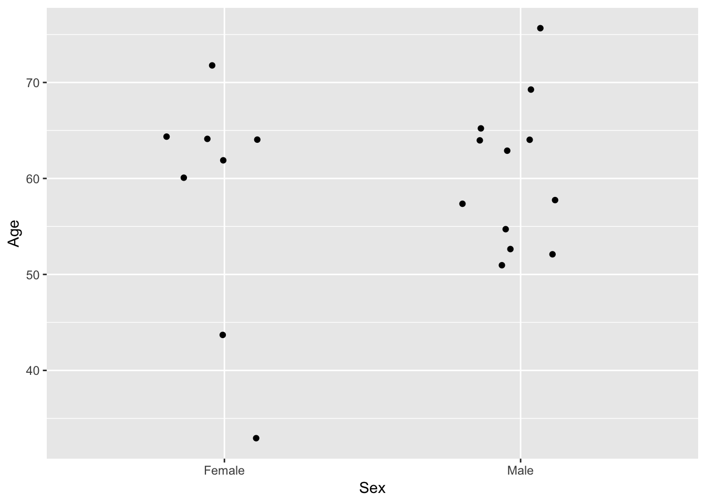

Chapter 2 Descriptive statistics
2.1 Measures of location
2.1.1 Arithmetic mean
The arithmetic mean (\(\bar{x}\)) is a measure of central location. It is calculated from the sum of all the observations (\({n}\)) divided by the number of observations:
\[\bar{x}=\frac{\sum_{i=1}^nx_{i}}{n}\]
The notation \(\sum_{i=1}^nx_{i}\) means the sum of all \({x}_i\) observations \(({x}_1+{x}_2+{x}_n)\). One limitation to the arithmetic mean is that it is overly sensitive to extreme values.
# Import dataset
load("docs/Example-data.Rda")
# Calcuate arithmetic mean
mean(data$Age)[1] 59.52.1.2 Median
If all observations are ordered from smallest to largest, the median is the middle number. More precisely, if \({n}\) is odd, \(\frac{n+1}{2}\), or if \({n}\) is even, the average of \(\frac{n}{2}\) and \(\frac{n}{2}+1\). The rationale for using to the median is to ensure an equal number of observations on both sides of the sample median. The main weakness of the sample median is that it is less sensitive to the actual numeric values of the data points. If the sample distribution is symmetric, the arithmetic mean is approximately the same as the median. For positively skewed distributions, the arithmetic mean tends to be larger than the median; for negatively skewed distributions, the arithmetic means tends to be smaller than the median.
# Calcuate arithmetic mean
median(data$Age)[1] 62.52.1.3 Mode
The mode is the most frequently occurring value among all of the observations in a sample. Some distributions have more than one mode. A distribution with one mode is called unimodal; two modes, bimodal; three modes, trimodal.
# Calcuate mode
library(DescTools)
Mode(data$Age)[1] 642.1.4 Geometric mean
The geometric mean (\(\bar{logx}\)) is the central number in a geometric progression such as exponential growth. The geometric mean is defined as the \({n}\)th root of the product of \({n}\) numbers:
\[\bar{logx}=\frac{\sum_{i=1}^nlogx_{i}}{n}\] Any base can be used to compute the logarithms for the geometric mean. It is usually preferable to work in the original scale by taking the antilogarithm of \(\bar{logx}\) to form the geometric mean.
# Calcuate geometric arithmetic mean
library(DescTools)
Gmean(data$Age)[1] 58.614992.2 Measures of spread
2.2.1 Range
The range is the difference between the smallest and largest observations in a sample. Range is very sensitive to extreme observations and depends on the sample size since the large the \({n}\), the largest the range tends to be.
# Calcuate range
range(data$Age)[1] 33 762.2.2 Percentile
Percentile is the value below which a given percentage of observations in a group of observations fall. The median is the 50th percentile and is a special case of a quantile. Compared to range, percentiles are less sensitive to outliers. The \({p}\)th percentile is defined by the \({(k+1)}\)th largest sample observation if \({np/100}\) is not an integer where \({k}\) is the largest integer less than \({np/100}\). If \({np/100}\) is an integer, then the \({p}\)th percentile is the average of the \({(np/100)}\)th and the \({(np/100+1)}\)th largest observations.
# Calcuate the 5th and 95th percentiles
quantile(data$Age, probs = c(0.05, 0.95), type = 2) 5% 95%
38.5 74.0 2.2.3 Variance
Variance (\({s^2}\)) is the average of the squared differences from the mean. The reason for squaring the differences is because the sum of the differences are always equal to zero. \[{s^2=\frac{\sum_{i=1}^n(x_i-\bar{x})^2}{n-1}}\]
# Calcuate variance
var(data$Age)[1] 95.315792.2.4 Standard deviation
Standard deviation (\({s}\)) is the square root of the sample variance. The advantage of using the standard deviation over the variance is that both the mean and standard deviation are in the same units whereas the variance and mean are not. \[{s=\sqrt\frac{\sum_{i=1}^n(x_i-\bar{x})^2}{n-1}}\]
# Calcuate standard deviation
sd(data$Age)[1] 9.7629812.2.5 Standard error of the mean
The standard error (\({se}\)) of the mean is how far the sample mean deviates from the population mean. It is equal to the variance obtained from a set of sample means from repeated samples of size \({n}\) from a population with underlying variance \({s}\). The standard error of the mean is estimated by \(\frac{s}{\sqrt{n}}\). The larger the sample size, the more precise the sample mean will estimate the population mean.
# Calcuate standard error
library(DescTools)
MeanSE(data$Age)[1] 2.1830692.2.6 Coefficient of varaince
The coefficient of variation (\({CV}\)) is a measure of relative variability and remains the same regardless of the observations units. \({CV}\) is defined by \({100\% \times s/\bar{x}}\). Coefficient of variation is most useful in comparing the variability of several different samples, each with different arithmetic means.
# Calcuate coefficient of variance
library(DescTools)
CoefVar(data$Age)[1] 0.16408372.3 Visualizing descriptive statistics
2.3.1 Single variable
2.3.1.1 Stem and leaf plot
# Create a stem and leaf plot
stem(data$Age)
The decimal point is 1 digit(s) to the right of the |
3 | 3
4 | 4
5 | 123578
6 | 0234444459
7 | 262.3.1.2 Frequency distribution table
# Create a frequency distribution table
table(data$Age)
33 44 51 52 53 55 57 58 60 62 63 64 65 69 72 76
1 1 1 1 1 1 1 1 1 1 1 5 1 1 1 1 2.3.1.3 Dot plot
# Create a dot plot
library(ggplot2)
ggplot(data = data, aes(x = Age)) +
geom_dotplot()
2.3.1.4 Histogram
# Create a histogram
library(ggplot2)
ggplot(data = data, aes(x = Age)) +
geom_histogram()
2.3.1.5 Density plot
# Create a density plot
library(ggplot2)
ggplot(data = data, aes(x = Age)) +
geom_density()
2.3.2 Muliple variables
2.3.2.1 Summary table
# Create a summary statistics table
library(dplyr)
stats <- group_by(data, Sex) %>%
summarise(Mean = mean(Age), Median = median(Age), SD = sd(Age), SE = MeanSE(Age), N = n())
stats# A tibble: 2 x 6
Sex Mean Median SD SE N
<fct> <dbl> <dbl> <dbl> <dbl> <int>
1 Female 57.9 63 12.8 4.52 8
2 Male 60.6 60.5 7.57 2.19 122.3.2.2 Bar graph
# Create a bar graph with standard error bars
library(ggplot2)
ggplot(data = stats, aes(x = Sex, y = Mean)) +
geom_bar(stat = "identity") +
geom_errorbar(aes(ymin = Mean-SE, ymax = Mean+SE, width = 0.2)) +
labs(y = "Mean age")2.3.2.3 Box plot
# Create a boxplot
library(ggplot2)
ggplot(data = data, aes(x = Sex, y = Age)) +
geom_boxplot()2.3.2.4 Violin plot
# Create a violin plot
library(ggplot2)
ggplot(data = data, aes(x = Sex, y = Age)) +
geom_violin()2.3.2.5 Jitter plot
# Create a jitter plot
library(ggplot2)
ggplot(data = data, aes(x = Sex, y = Age)) +
geom_jitter(width = 0.2)